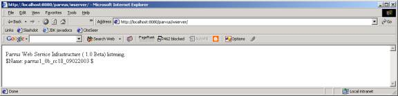

3. Building
and Deploying a Web Service
4. Consuming
Web Services with Parvus
5. Developer
tools support: Custom Ant tasks.
6. Building
secure Web Services
Wingfoot
Parvus is a lightweight SOAP engine that can be embedded in custom
applications, or deployed as a SOAP server inside a servlet container. This
user guide explains how to install it, and how to build and deploy Web
Services.
In this
user guide, we use Jakarta Tomcat 4.1.x as our servlet container.
If you
download Parvus from the website, it is available as a zip file (e.g. parvusX.Y.zip).
The first step for installation is to extract out the installable zip file into
a directory of choice. This can be done either using the Winzip utility
on Windows or unzip on Linux. The java ‘jar’ command can also be
used to extract out the files.
$ jar xvf parvus1_0a.zip .
This would extract out the files to the ‘parvus’ directory. We will refer to this directory as PARVUS_HOME in the rest of the user guide.
If installing from a CD, copy the ‘parvus’ directory to a location of choice on your file system. This location is referred to as PARVUS_HOME in the rest of the user guide.
Next, we copy PARVUS_HOME/lib/parvus.war to
CATALINA_HOME/webapps/ and restart Tomcat. Here, CATALINA_HOME is the Tomcat
4.1.x install directory. We now have to restart Tomcat in order to have the
parvus web application loaded. In case we use Tomcat’s manager application to
install the webapp, we would need to restart Tomcat.
Now browse over to the URL http://localhost:8080/parvus.
Here localhost and 8080 are the host and port number that Tomcat runs on- this
might be different in your installation.
Click on the ‘Check if Parvus running’ link
on the left hand side- you should see the following message on your browser
window (the actual version number displayed might be different).

Configure Parvus:
There are some configuration parameters that may
need to be tuned. Edit the CATALINA_HOME/webapps/parvus/WEB-INF/classes/wingfoot.properties
file and modify as required. The configurable parameters in this file are:
All the paths should be absolute.
Once these parameters have been modified, Tomcat
(or the parvus web application) should be restarted for them to take
effect.
The first step is to write and compile the Web Service. The Echo Web Service shown below is a simple java class with methods that echo the input parameters. The code for the service is listed below.
package com.wingfoot.demos.echo;
/**
* A
simple echo Web Service
*/
public class EchoService {
/**
*
Echo a string
*/
public String echoString (String input) {
return input;
}
/**
*
Echo an integer
*/
public int echoInt (int input) {
return input;
}
}
We now compile this class:
$ java –d .
EchoService.java
The next step is to generate the WSDL file for the
class, and the deployment descriptor.
On UNIX/Linux:
$ java –classpath $PARVUS_HOME\lib\parvus.jar com.wingfoot.tools.Java2WSDL -e http://127.0.0.1:8080/parvus/wserver/ -f echo.wsdl com.wingfoot.demos.echo.EchoService
On Windows:
$ java –classpath %PARVUS_HOME%/lib/parvus.jar com.wingfoot.tools.Java2WSDL -e http://127.0.0.1:8080/parvus/wserver/ -f echo.wsdl com.wingfoot.demos.echo.EchoService
If the –d option is not passed to the command, the
deployment descriptor file will not be generated.
The parvus.jar jar file can be added to the
CLASSPATH to avoid passing it via the command line every time.
The Java2WSDL command does the following:
Running Java2WSDL without any options shows the other features it supports:
$ java com.wingfoot.tools.Java2WSDL
Java2WSDL usage: java
com.wingfoot.tools.Java2WSDL <options> <classname>
Available options:
-e
<ServiceEndpoint> the URI of a Parvus server. If specified, the WSDL is published to the server. If not specified, the WSDL is written to the
local file system.
-f
<WSDL filename> the name of the WSDL to create. If not specified, a name is assigned.
-s
generate the WSDL using document style.
If not specified, RPC style is used.
-l
generate the WSDL using literal encoding.
If not specified, Section V encoding is used.
-m
<java package> <namespace> maps a java package to a target
namespace
Please note that <classname> refers to
the java package and classname (for example: com.foo.class)
Finally, we deploy the service in Parvus. This can be done
via the DeploymentAdmin command.
$ java
com.wingfoot.soap.server.DeploymentAdmin http://127.0.0.1:8080/parvus/wserver/
deploy echo.dd
After this is done, the java classes for the service need to
be moved to the location where the Servlet engine can find them.
On Linux:
$ cp EchoService.class
$CATALINA_HOME/webapps/parvus/WEB-INF/classes
On Windows:
$ copy EchoService.class
%CATALINA_HOME%/webapps/parvus/WEB-INF/classes
We can use the ‘list’ command to confirm that the service
has been deployed.
$ java
com.wingfoot.soap.server.DeploymentAdmin http://127.0.0.1:8080/parvus/wserver/
list
The complete set of options the DeploymentAdmin supports
is:
$ java
com.wingfoot.soap.server.DeploymentAdmin
Incorrect
Arguments!!!
java
com.wingfoot.soap.server.DeploymentAdmin listenerURL [deploy | undeploy | list]
[ DescriptorFileName | Service to remove]
Later in the chapter we’ll see how to automate these tasks
using custom Ant tasks.
Given the WSDL definition of a Web Service, it is
easy to build a client to consume the service. Parvus comes with tool to
generate client side stubs.
$
java com.wingfoot.tools.WSDL2Java
WSDL2Java usage: java
com.wingfoot.tools.WSDL2Java <options> <wsdl file>
Available options:
-p
<namespace> <java package> The p switch allows for specifying
namespace to package mapping
-t
<transport class> The t switch allows for specifying an alternate
transport
-s
The s switch specify that the stubs maintain a session variable
The <wsdl file> can be a URL or a file
on the filesystem
In the following example, we show how to consume a
publicly available Web Service. We use a Web Service listed as xmethods.net
that returns the temperature of a given US ZIP code.
$ java com.wingfoot.tools.WSDL2Java
http://www.xmethods.net/sd/2001/TemperatureService.wsdl
Parvus
generated the following client files:
TemperaturePortTypeBind.java
TemperaturePortType.java
If the command is run from behind a proxy server to
get a WSDL file outside the local network, the -Dhttp.proxyHost and -Dhttp.proxyPort
options can be used to specify the proxy settings.
As can be seen above, two java files are generated
a XXXPortTypeBind.java file containing the interface class for the SOAP methods
exposed and the XXXPortType.java that has code to ‘bind’ to the SOAP endpoint.
A client application would need to bind to the SOAP
endpoint and invoke the method listed in the interface on it. The following is
a sample client application using this service:
public class TemperatureClient {
public
static void main (String args[]) throws Exception {
TemperaturePortType port = TemperaturePortTypeBind.bind ();
port.getTemp (args[0]);
}
}
We can
then build and run this application as shown:
$ javac -d . Temp*.java
$ java TemperatureClient 94538
Again,
the -Dhttp.proxyHost and -Dhttp.proxyPort options can be used to
specify the proxy settings when running behind proxy servers.
Parvus comes with custom Ant tasks for a convenient
interface for managing Web Services. In order to begin using these tasks, you
would need to copy the parvus.jar and wingfoot-ant.jar file from
PARVUS_HOME/lib to your Ant library directory (ANT_HOME/lib).
For example, if the Ant install directory is /home/jdoe/jakarta-ant-1.5.1
and the Parvus install directory is /home/jdoe/parvus, the following
command should be executed:
$
cp /home/jdoe/parvus/lib/wingfoot-ant.jar /home/jdoe/jakarta-ant-1.5.1/lib
$
cp /home/jdoe/parvus/lib/parvus.jar /home/jdoe/jakarta-ant-1.5.1/lib
Once this is done, the Parvus Ant tasks can be
added to build scripts. The following Ant script is an example of the steps
that need to be done.
<!--
**
Sample build.xml for a Web Service that is deployed in
**
the Wingfoot SOAP server
-->
<project name="EchoService"
default="compile" basedir=".">
<!-- Configure properties for building the web service -->
<property name="src"
value="."/>
<property name="build"
value="${basedir}/build"/>
<!-- Java class that has the Web Service methods -->
<property name=”serviceClass”
value=” com.wingfoot.demos.echo.EchoService”/>
<!-- Configure properties to access Wingfoot SOAP -->
<!-- verbose=true prints trace messages while performing
admin tasks
-->
<property name="verbose"
value="true"/>
<!-- Wingfoot SOAP router URL -->
<property name="url"
value="http://127.0.0.1:8080/parvus/wserver/"/>
<!--URL that the WSDL description for this service will be
published at.
-->
<property name="wsdlUrl"
value="http://127.0.0.1:8080/parvus/echo.wsdl"/>
<!-- Deployment descriptor file for the Echo Web Service -->
<property name="ddfile"
value="echo.wsdlDD.xml"/>
<!--
URN for the Echo Web Service -->
<property name="serviceURN" value="urn:echo"/>
<!--
Configure the Wingfoot custom Ant tasks -->
<taskdef name="list"
classname="com.wingfoot.tools.ant.ListServiceAntTask"/>
<taskdef name="deploy"
classname="com.wingfoot.tools.ant.DeployServiceAntTask"/>
<taskdef name="undeploy"
classname="com.wingfoot.tools.ant.UndeployServiceAntTask"/>
<taskdef name="wsdl2java"
classname="com.wingfoot.tools.ant.WSDL2JavaAntTask"/>
<taskdef name="java2wsdl"
classname="com.wingfoot.tools.ant.Java2WSDLAntTask"/>
<!-- Create the build directory structure used by compile -->
<target name="init">
<mkdir dir="${build}"/>
</target>
<!-- Compiles the Web Service code
-->
<target name="compile" description="Compile web
application"
depends="init">
<javac srcdir="${src}" destdir="${build}"/>
</target>
<!--
Lists all deployed Web Services -->
<target name="list" description="List all web
applications">
<list url="${url}" verbose="${verbose}"/>
</target>
<!-- Deploys the Echo Web Service
-->
<target name="deploy" description="Deploy web
service"
depends="compile">
<deploy url="${url}" DDFile="${ddfile}"
verbose="${verbose}"/>
</target>
<!-- Undeploys the Echo Web Service -->
<target name="undeploy" description="Undeploy web
service">
<undeploy url="${url}" serviceURN="${serviceURN}"
verbose="${verbose}"/>
</target>
<!—Generates a WSDL description for the service -->
<target name="java2wsdl" description="Generate WSDL
description">
<java2sdl serviceEndpoint="${url}" wsdlFile=”echo.wsdl”
publishedURL=”${wsdlUrl}”
classname=”${serviceClass}”
verbose="${verbose}"/>
</target>
</project>
Using this ant script, deployment and listing of deployed Web Services can be done using the following ant targets. We could also have set the dependencies for the targets such that a ‘deploy’ would first invoke ‘build’ and then ‘java2wsdl’.
$ ant
$ ant java2wsdl
$ ant deploy
$ ant list
The table(s) below documents the attributes of all
the ant tasks:
List
|
Attribute |
Description |
Required |
|
verbose |
Sets the trace flag |
Optional. |
|
url |
Sets the Parvus SOAP router endpoint |
Mandatory. |
Deploy
|
Attribute |
Description |
Required |
|
verbose |
Sets the trace flag |
Optional. |
|
url |
Sets the Parvus SOAP router endpoint |
Mandatory. |
|
DDFile |
Sets the Deployment Descriptor file |
Mandatory. |
Undeploy
|
Attribute |
Description |
Required |
|
verbose |
Sets the trace flag |
Optional. |
|
serviceURN |
Sets the URN for the deployed service |
Mandatory. |
Java2WSDL
|
Attribute |
Description |
Required |
|
verbose |
Sets the trace flag |
Optional. |
|
serviceEndpoint |
Sets the endpoint of the Parvus SOAP router |
Mandatory. |
|
wsdlFile |
Name of the WSDL file to generate |
Mandatory. |
|
publishedURL |
Sets the URL that the WSDL file will be published
at. |
Mandatory. |
|
document |
Use Document style (true) or not (false). The default is false. |
Optional. |
|
literal |
Use Literal style (true) or not (false). The default is false. |
Optional. |
|
publish |
Publish (true) WSDL to SOAP server or not
(false). The default is false. |
Optional. |
|
classname |
The name of the java class containing the Web
Service methods. |
Mandatory. |
Java2WSDL can include one or more nested <mapping> elements that specify
the namespace to java package name mappings. These have the following
attributes.
|
Attribute |
Description |
Required |
|
namespace |
XML Namespace |
Mandatory. |
|
packageName |
Java package name |
Mandatory. |
WSDL2Java
|
Attribute |
Description |
Required |
|
verbose |
Sets the trace flag |
Optional. |
|
transportClass |
Alternate SOAP transport class to use |
Optional. |
|
sessions |
Enable (true) or disable support (false) for
sessions in generated client stubs. The default is false. |
Optional. |
|
wsdlFile |
The URL or file system path name to the WSDL
file. |
Mandatory. |
Java2WSDL can include one or more nested <mapping> elements that specify
the namespace to java package name mappings. These have the following attributes.
|
Attribute |
Description |
Required |
|
namespace |
XML Namespace |
Mandatory. |
|
packageName |
Java package name |
Mandatory. |
Secure Web Services can be achieved at two levels: at the transport layer level, and at the XML message level. Parvus currently does not support XML layer security mechanisms.
SSL (Secure Socket Layer) can be used to secure the transport layer. To do this, we need to configure the servlet engine for SSL support such that the Parvus SOAP router URL (https://127.0.0.1:8080/parvus/wserver/) is now an https URL. This step is servlet engine specific, and hence not covered in this document.
Once this is done, the steps listed in sections (3) and (4) can be repeated, as required, to generate the WSDL and client side stubs.
On the service side, no other changes are required.
On the client side, while accessing a service over SSL, the following two lines would need to be added (shown below), and the JSSE jar files (jsse.jar, jcert.jar, jnet.jar) added to the client application’s CLASSPATH.
public class TemperatureClient {
public
static void main (String args[]) throws Exception {
/* Add SSL as supported protocol */
System.setProperty("java.protocol.handler.pkgs",
"com.sun.net.ssl.internal.www.protocol");
java.security.Security.addProvider(new
com.sun.net.ssl.internal.ssl.Provider());
TemperaturePortType port = TemperaturePortTypeBind.bind ();
port.getTemp (args[0]);
}
}
JSSE is an optional package available from http://java.sun.com/products/jsse/. It is not required for JDK 1.4 and above.
Using the configuration explained above, the data (i.e. the SOAP messages) is encrypted and the server is authenticated. The client however is not authenticated- this requires client side SSL support, which is currently not available in Parvus.
Wingfoot maintains a moderated mailing list to discuss all aspects of its products including technical how to and suggestions for future enhancements. You can find additional information about joining the newsgroup at http://www.wingfoot.com/mailinglist.jsp.